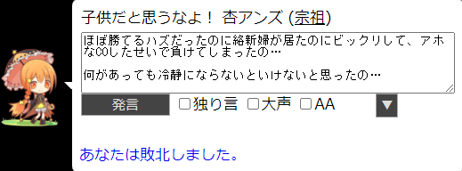
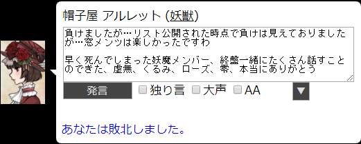
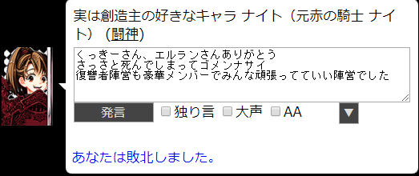
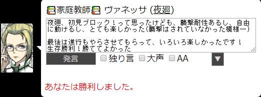
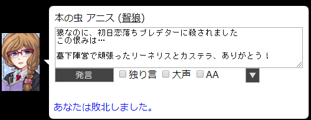
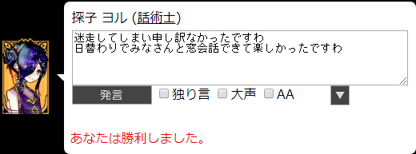
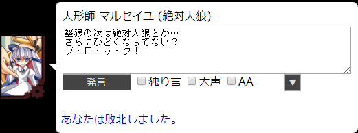
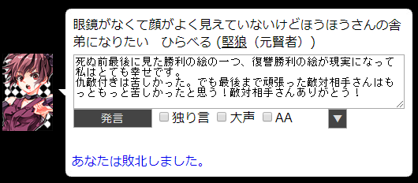

人狼用にいろいろまとめようかと作ってみたページです。
特に凝ったページにするつもりもないので、
ゆるりと気ままに更新していこうかと思っています。
ねじれ役職一覧 スプレッドシートとか
人狼をはじめたきっかけ 短期人狼 長期人狼 ねじれ長期
◇ ねじれ役職一覧 ◇
スプレッドシートで作っていた表の一部を公開できる形で抜き出してみました！
ねじれ役職一覧へ◇ スプレッドシートとか ◇
みんなに使ってもらえそうなものがあれば、
順次公開していってもいいかなと…
|
ねじれ役職陣営別確率計算 ねじれ役職陣営別確率計算2 |
スプレッドシート | 2020/06/08公開 |
被ったとき用に同じものを二つ作っただけなので、どちらも同じです この陣営どのくらいの確率で出るの？ どのくらいの人数出るの？ |
||
◇ 人狼をはじめたきっかけ ◇
とある忘年会の日。
会場へ向かう電車の中で、職場の子たちが人狼の話をしていました。
人狼なんて全然知らなかったのですが、どんなゲームか教えてくれて、
会社の寮でまたするから、一緒にします？
と誘われて、参加させてもらいました。
当時は定期的にやっていたので、
何度かその対面人狼は参加させてもらいました。
その後、オンライン人狼(yahoo人狼)でしばらく観戦をしていました。
2016年1月下旬あたりだったでしょうか。
勇気を持って、参戦することにしました！
ここから人狼にハマる生活が始まりました。
◇ 短期人狼 ◇
| yahoo人狼 | 2016/01下旬 ～ 2016/03/31 | ||||||||||||||||||||||||||||||||
はじめてオンライン人狼をした鯖です 人数多いのには手が出せず、ほぼ11Aに参加していました
|
|||||||||||||||||||||||||||||||||
| えけけ鯖 | 2016/04/01 ～ | ||||||||||||||||||||||||||||||||
yahoo人狼のサービス終了を受けて、えけけさんが作った鯖 ハンゲの人狼パーティーが始まるまでは、ここで毎日のように11Aをやってました ハンゲ人狼終了後、しばらくお世話になっていましたが、 11A(この鯖では12Aってなってる)戦績：237勝 213敗 勝率：52.67% 17Aはハンゲ人狼終了後、何度かやった程度です… |
|||||||||||||||||||||||||||||||||
| 人狼パーティー(ハンゲーム) | 2016/07/28 ～ 2019/03/28 | ||||||||||||||||||||||||||||||||
ここができてから、えけけ鯖に居た人たちで、こちらに流れる人も居ました。 はじめは11Aばかりしていたのですが、途中から12Bを中心にするようになり、
いろんなレギュが組めるので、狂人村、カップル村、etc…
終盤は、ほぼ18人カオスで遊んでいました。
よくやっていた小悪魔のいる方は18人カオスはスクショなかったです(´・ω・｀)
総日数：30262(生存日数：20741 (56歳！) ) |
|||||||||||||||||||||||||||||||||
| やさしい人狼 | 2019/03/29 ～ | ||||||||||||||||||||||||||||||||
鯖自体は前から合ったのだけど、 移動当初は、通常村にも参戦していましたが、 |
|||||||||||||||||||||||||||||||||


◇ 長期人狼 ◇
長期人狼は人の感情が流れてくるのが感じ取れて、楽しいと思ったんだけど、
それ以上に文章読むのが苦手というか嫌いというか…
それを痛感しています
長文、最後まで読んでるうちに
はじめに言ってたことが分からなくなるんですよね…
必要なことは箇条書きとかにしたり、
分割したりして読んだりするぐらいなので…
できたら、短い文で、5歳児でも分かるようにお願いしますm(_ _)m
ねじれ以外で参戦した長期人狼は今のところ、下の二つです
| 【誰歓】隙間時間で遊ぼう村【5文字×3発言】 | 【鳥】アナトラ (村人) | 2020/05/29 |
灰で叫びすぎました！かなり言葉悪かった、ゴメンナサイ…
|
||
| 【G編成初歓】縁結びし螺旋の村 | 【獣】ビアンカ (村人) | 2020/02/28 |
はじめてのG編成、はじめてのガチ村で800pt。 |
||

◇ ねじれ長期で参戦した村 ◇
| 【誰歓】村ロスたちの長期村 | 宗祖 アンズ | 2020/06/10 |
初手占いを見つけたので酒場のマスターCOで長生きさせてもらいました。  |
||
| 【誰歓】第7.9回 妖魔と憑狼とストーカー村 | 妖獣 アルレット | 2020/05/02 |
覗きもリスト流出もないハズが、覗かれて、リストも流出されて…  |
||
| 【誰歓】来たれ！第7回99人村二次会！ | 闘神 ナイト | 2020/03/29 |
刑部狸騙りをして、噛まれに行きました。  |
||
| 【誰歓】待ってた第7回99人村 | 夜廻 ヴァネッサ | 2020/03/06 |
人外が潰し合ったので村有利な感じでした  |
||
| 第6.9回 闇鍋（長期） | 智狼 アニス | 2020/02/14 |
狼なのにさっさと噛まれて墓下から恋撲滅のために動いていた毎日でした  |
||
| ねずみ年だよ。たくさんの鼠と新年を祝おう長期村 | 話術士 ヨル | 2020/01/02 |
話術士は毎日誰かを窓に呼んでお話できてほんとに楽しかったです  |
||
| クリスマスだけどランダムやる村 | 絶対人狼 マルセイユ | 2019/12/26 |
飽和しないように気を付けてたんだよ？気を付けてても…妖魔多すぎない？  |
||
| 第6回二次会救世勇者のやり直し村 | 堅狼(仇敵) ひらべる | 2019/11/29 |
仇敵付きは毎日が辛かったです…今なら、耐えれるかも！？  |
||
| 【誰歓】2周年記念 第6回99人村 | 純血鬼 ルージュ | 2019/10/29 |
はじめての長期！右も左も分からない状況で、仁さんに墓下送りにされました。 |
||
とりあえずこれぐらいで…
あとはボチボチ追加していこう…
Copyright(c)2020 りゅ all rights reserved.